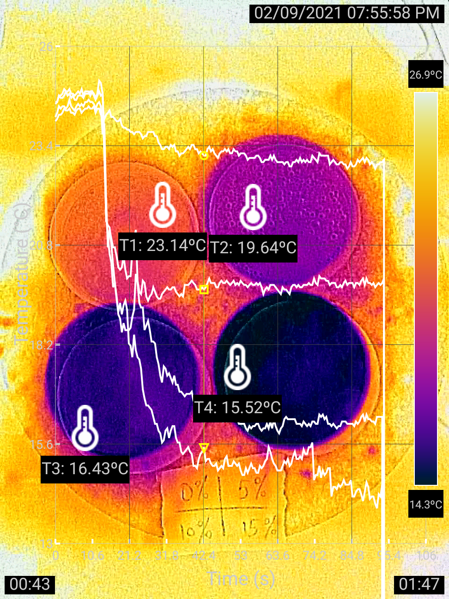

|
 |
Thermographer: Rundong Jiang Description: In this experiment, four petri dishes contained different concentrations of vinegar (0%, 5%, 10%, and 15%). Then the same amount of excessive baking soda was added to them. Tap to download the video. |